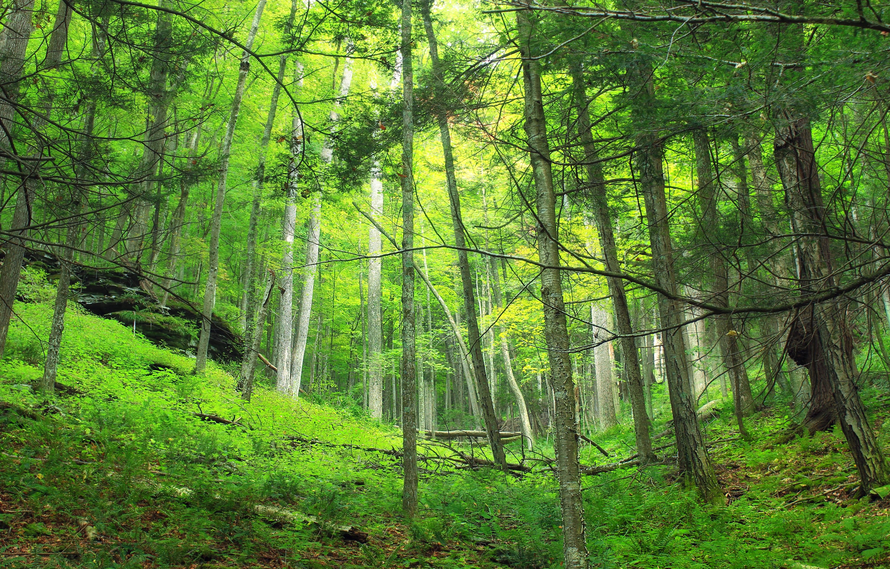

Sobre a Ecologia
A ecologia é o estudo das interações entre os seres vivos e seu ambiente. O equilíbrio ecológico é essencial para a sobrevivência de todas as formas de vida, incluindo os seres humanos.
A Importância da Preservação Ambiental
Proteger o meio ambiente é vital para garantir recursos naturais para as gerações futuras e manter a biodiversidade do planeta.
- Redução da poluição do ar e da água
- Preservação de habitats naturais
- Promoção de práticas sustentáveis
Dicas para Ajudar o Meio Ambiente
- Plante árvores e cuide das áreas verdes
- Recicle e reduza o uso de plásticos
- Use transporte público ou caronas para reduzir emissões
- Economize energia e água no seu dia a dia
Contato
Entre em contato para saber mais sobre como você pode contribuir para a preservação ambiental.